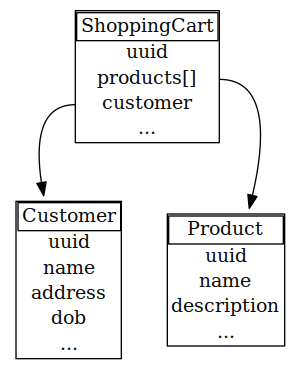
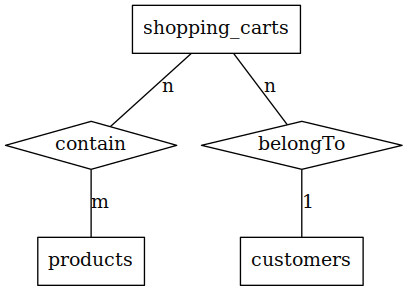
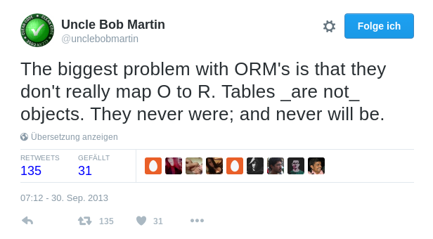

"Data Mapper", gleiches Schicksal …



| ID | shopping_cart_ID | product_ID |
|---|---|---|
| 1 | 1 | 23 |
| ID | shopping_cart_ID | product_ID |
|---|---|---|
| 1 | 1 | 23 |
| 2 | 1 | 42 |
| ID | shopping_cart_ID | product_ID |
|---|---|---|
| 1 | 1 | 23 |
| ID | shopping_cart_ID | product_ID |
|---|---|---|
| 1 | 1 | 23 |
| 3 | 1 | 5 |
Produkte die aus dem Warenkorb entfernt werden, werden sicherlich versehentlich entfernt und unmittelbar im Anschluss vom Kunden bestimmt wieder hinzugefügt.
Deswegen soll das Entfernen-Feature versteckt werden, um Fehlbedienung künftig zu vermeiden.
Wenn Kunden lilafarbene Produkte zum Warenkorb hinzufügen, erschrecken sich diese bei Ansicht des Warenkorbs, da das Lila nicht zur Farbgebung der restlichen Seite passt. Um zu verhindern, dass Kunden die Produkte dann entfernen, sollen jene Produkte künftig nicht mehr mit Bild im Warenkorb gelistet werden.
final class ProductWasAddedToShoppingCart implements DomainEvent { private $shoppingCartId; private $productId; // public function __construct($shoppingCartId, $productId); // Getter ... }
ursprünglich ersonnen von Bertrand Meyer, dem Erfinder der Programmiersparche Eiffel
final class ShoppingCart implements RecordsEvents { /** @var ShoppingCartId */ private $shoppingCartId; private function __construct(ShoppingCartId $shoppingCartId) { $this->shoppingCartId = $shoppingCartId; } public static function create(ShoppingCartId $shoppingCartId) { $shoppingCart = new static($shoppingCartId); $this->recordThat(new ShoppingCartWasCreated($shoppingCartId)); return $shoppingCart; } }
use Ramsey\Uuid\Uuid; final class ShoppingCartId implements IdentifiesAggregate { private $shoppingCartId; private function __construct(string $shoppingCartId) { $this->shoppingCartId = $shoppingCartId; } public function equals(IdentifiesAggregate $other) { return $other instanceof ShoppingCartId && $this->shoppingCartId === $other->shoppingCartId; } public static function generate() { return new static(Uuid::uuid4()); } // public static function fromString(string $string) ... // public function __toString() ... }
final class ShoppingCartWasCreated implements DomainEvent { /** @var ShoppingCartId */ private $shoppingCartId; public function __construct(ShoppingCartId $shoppingCartId) { $this->shoppingCartId = $shoppingCartId; } public function getAggregateId() { return $this->shoppingCartId; } }
final class ShoppingCart implements RecordsEvents { /** @var DomainEvent[] */ private $recordedEvents; private function recordThat(DomainEvent $event) { $this->recordedEvents[] = $event; } /** @return DomainEvent[] */ public function getRecordedEvents(): array { return $this->recordedEvents; } }
final class ProductWasAddedToShoppingCart implements DomainEvent { private $shoppingCartId; private $productId; public function __construct(ShoppingCartId $shoppingCartId, ProductId $productId) { $this->shoppingCartId = $shoppingCartId; $this->productId = $productId; } public function getAggregateId() { return $this->shoppingCartId; } public function getProductId() { return $this->productId; } }
final class ShoppingCart implements RecordsEvents { public function addProduct(ProductId $productId) { $this->recordThat( new ProductWasAddedToShoppingCart($this->shoppingCartId, $productId) ); } }
Wir haben nur noch XS-Pakete in der Logistik, Warenkörbe mit mehr als drei Produkten können nicht mehr abgewickelt werden.
final class ShoppingCart implements RecordsEvents { private $productCount = 0; public function addProduct(ProductId $productId) { if ($this->productCount > 3) { throw new ShoppingCartLimitReachedException(); } $this->productCount ++; $this->recordThat( new ProductWasAddedToShoppingCart($this->shoppingCartId, $productId) ); } // removeProduct: $this->productCount -- }
final class ShoppingCartListingProjector { public function projectProductWasAddedToShoppingCart( ProductWasAddedToShoppingCart $event ) { // $this->productRepository->find($event->getProductId()) // $product->getName() ... $this->redis->rpush($event->getAggregateId(), $event->getProductId()); } }
final class ShoppingCartController { public function listItemsAction() { $shoppingCartId = $this->get('session')->get('shopping-cart-id'); $items = $this->get('redis')->lrange($shoppingCartId, 0, -1); return $this->render('shopping-cart-list.html.twig', [ 'items' => $items ]); } }
Wir brauchen unbedingt ein Dashboard das den aktuell größten Warenkorb anzeigt.
Kommt darauf an, könnte passen, wenn …